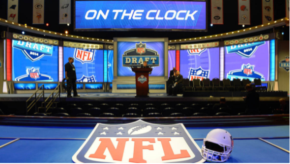

Decoding the Draft: NFL Edition
Previously, I have written an article analyzing the comparative value of each NBA Draft position, from #1 to #60. To do this, I looked at the mean and median win shares of players taken at each spot in the last 10…